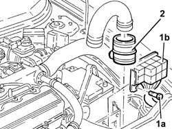
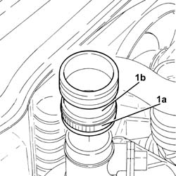
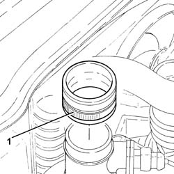

1048A42 sleeve from flow meter to turbo charger air inlet pipe - r + r
- Path
- Procedures > 10 ENGINE > 1048 ENGINE AIR SUPPLY CIRCUIT > 1048A vacuum air circuit > 1048A42 sleeve from flow meter to turbo charger air inlet pipe - r + r
- Kind
- repair procedure (removal / refitting; the operation number is the code)
- Applies to
- engines: 1.9 JTD 8v , 1.9 JTD 16v, 2.4 JTD 10v, 2.4 JTD 20v; all production periods
- Interactive page
- https://sloeber94.github.io/elrnDB-a156/en/#/3237783
Applies to: engines: 1.9 JTD 8v , 2.4 JTD 10v; all production periods
 Removing
Removing
 Refitting
Refitting1048A50 air inlet pipe to turbo charger - r + r
1. Undo the bolts (1a) and move the relay holder backet (1b) away from the battery drip tray.
2. Disconnect and remove the hose from the flow meter to the turbocharger air inlet pipe from the air flow meter.

Applies to: engines: 1.9 JTD 8v , 2.4 JTD 10v; all production periods
Refitting
RemovingFit the hose from the flow meter to the turbocharger air inlet pipe.
Place the relay holder bracket back in its housing and fix it using the bolts.
Applies to: engines: 1.9 JTD 16v; all production periods
Removing
RefittingProceed with removal 1016A10 sound-proofing cover - r + r .
Proceed with removal 1048A50 air inlet pipe to turbo charger - r + r .
1. Loosen collar (1a) and remove the air intake sleeve from flowmeter to turbocharger air intake pipe (1b).

Applies to: engines: 1.9 JTD 16v; all production periods
Refitting
RemovingPlace the sleeve from flowmeter to turbocharger air intake hose back in its housing and tighten the band.
Proceed with refitting 1048A50 air inlet pipe to turbo charger - r + r .
Proceed with refitting 1016A10 sound-proofing cover - r + r .
Applies to: engines: 2.4 JTD 20v; all production periods
Removing
RefittingProceed with removal 1048A50 air inlet pipe to turbo charger - r + r .
1. Loosen the band and remove the hose from the flowmeter to turbocharger air intake pipe.

Applies to: engines: 2.4 JTD 20v; all production periods
Refitting
RemovingPlace the hose from flowmeter to turbocharger air intake hose back in its housing and tighten the band.
Proceed with refitting 1048A50 air inlet pipe to turbo charger - r + r .